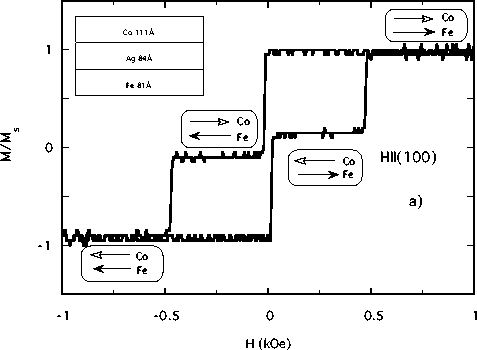
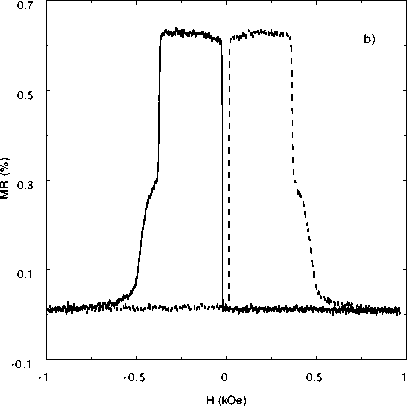

Figure 2: a) H||(100) magnetization curve
for a Fe81Å/Ag84Å/Co111Å sandwich. The
low-field reversal is due to the Fe film, and the high-field
reversal is due to Co. Ferromagnetic resonance shows no
interlayer coupling.

b) Magnetoresistance loop for the same sample in the same
orientation. The resistance is enhanced in the field region
Hc, Fe < |H| < Hc, Co where the moments of the two
ferromagnetic layers are antiparallel. The solid line
indicates the sweep from positive to negative fields, whereas
the dashed line indicates the sweep from negative to positive
fields.